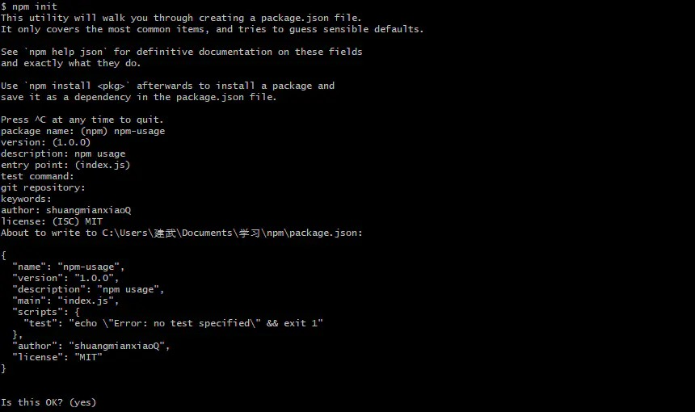
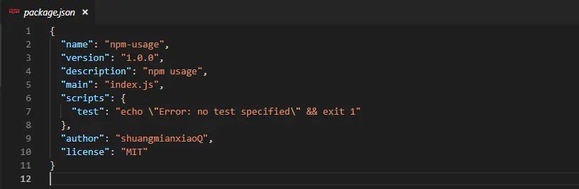
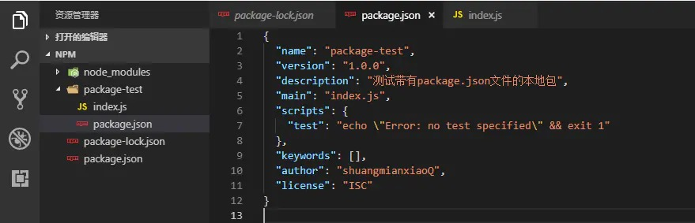
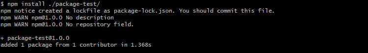
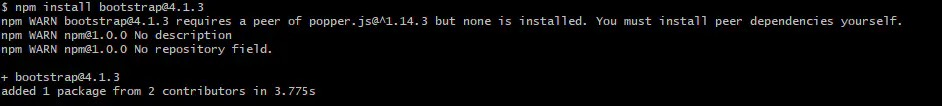
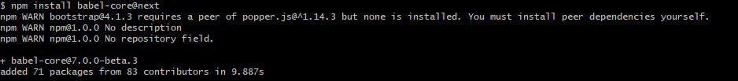
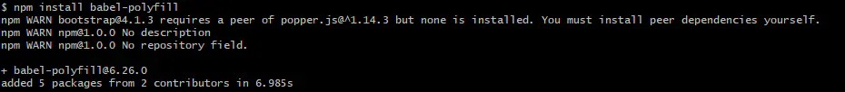
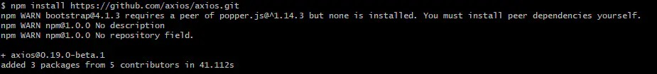

前言
随着前端工程的发展，npm 已然成为每个前端开发者的必备技能，然而大多数人对它的使用也只是停留在使用 npm 安装一些依赖包而已。作为全世界最大规模的包管理器，每周大约有30亿次的下载量，npm 的功能远不止安装依赖这么简单，本文的目的就是介绍 npm 更多的功能。
npm 安装和管理
npm 是 Node.js 自带的一个包管理工具，在 Node.js 官网 安装 Node.js 后即可使用 npm。或者用 brew install node 来安装 node。在这里说下，本人用 brew install node 安装 node 时遇到的一个坑。如下图：

装完后，查看 node 版本 node -v 没有问题。但是查看 npm 版本 npm -v，一直显示 zsh: command not found: npm。网上找了很多解决方案都说是环境变量没有配置，后来配置了环境变量，但依旧没有 npm 可用。其实不是环境变量没有配置的原因，而是如上图系统提示 Warning: The post-install step did not complete successfully，多方查询后，有人提到可能是 brew 安装目录的权限问题，解决办法是：
1 | sudo chown -R $(whoami) $(brew --prefix)/* |
运行上面的命令后，再次重新安装 node，问题解决了。
查看 npm 版本
1 | npm -v |
更新 npm 版本
1 | npm install npm@latest -g |
npm init
该命令的原理是调用脚本（init-package-json），输出一个初始化的 package.json 文件，package.json 中记录了项目中的依赖包的信息（如名称、版本等）。


执行 npm init 每次都会输入如上信息，可以使用 npm init --yes 快速创建一个带有默认信息的 package.json 的文件。
安装依赖包
安装依赖包是 npm 的核心功能，输入npm install，npm 会自动从 package.json 文件中寻找 dependencies，devDependencies 下的依赖包，并安装到项目的 node-modules 文件夹下。
关于 package
当手动安装一个依赖包时，使用 npm install <package> 命令即可安装，参数 package 即是要安装的依赖包名，一般 npm 会在默认源仓库中去查找对应的包名。然而 package 不光是一个包名，还有更多的含义，参见：Understanding Packages and Modules，以下是 package 定义的规则：
-
包含
package.json文件描述该程序的文件夹。

-
足规则（1）的 gzip 压缩文件。
-
可以是规则（2）资源的
url链接。 -
格式为
<name>@<version>，<name>@<version>是规则（3）已经发布到npm 源仓库。
-
格式为
<name>@<tag>，通过tag标记获取到version，指向规则（4）。
-
格式为
<name>，默认是latest tag（版本），且满足规则（5）。
-
支持
git url，结果满足规则（1）。
注意： 无论以何种方式安装依赖包，npm install 时都会去根据 package.json 文件中的 dependencies 字段下载它所依赖的相关包。
依赖包版本管理
- 使用
npm5.2以上的版本，保留package-lock.json文件 - 不要手动修改
package-lock.json - 升级小版本依赖包：
npm update <package> - 升级大版本依赖包：
npm install <package>@<version> - 降级依赖包：
npm install <package>@<version> - 删除依赖包：
npm uninstall <package> - 当提交了
package.json，package-lock.json的更新后，应及时拉取更新，并重新npm install重新安装更新后的依赖
npm scripts
npm scripts 可以在 package.json 文件中自定义脚本。
1 | { |
以上代码片段是 create-react-app 脚手架生成的 React 项目中的 scripts，可以使用 npm run 命令来执行上面的 scripts，执行 npm run build 就等同于执行对应的npm脚本：react-scripts build。
npm 脚本原理
当执行 npm run 命令时，会自动新建一个 shell 去执行里面的脚本，shell 会将 ./node_modules./bin 目录添加到 PATH 变量中。也就是说，如果 ./node_modules./.bin 目录中的脚本，可以直接调用脚本名，不用去写完整的脚本路径或是全局安装脚本了。
简写
npm start：是npm run start的简写npm stop：是npm run stop的简写npm test：是npm run test的简写npm restart：是npm run stop && npm run restart && npm run start的简写
参考：https://www.jianshu.com/p/921e0b89909b
If you like this blog or find it useful for you, you are welcome to comment on it. You are also welcome to share this blog, so that more people can participate in it. If the images used in the blog infringe your copyright, please contact the author to delete them. Thank you !